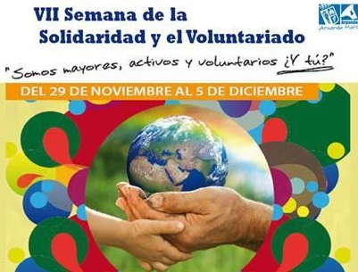
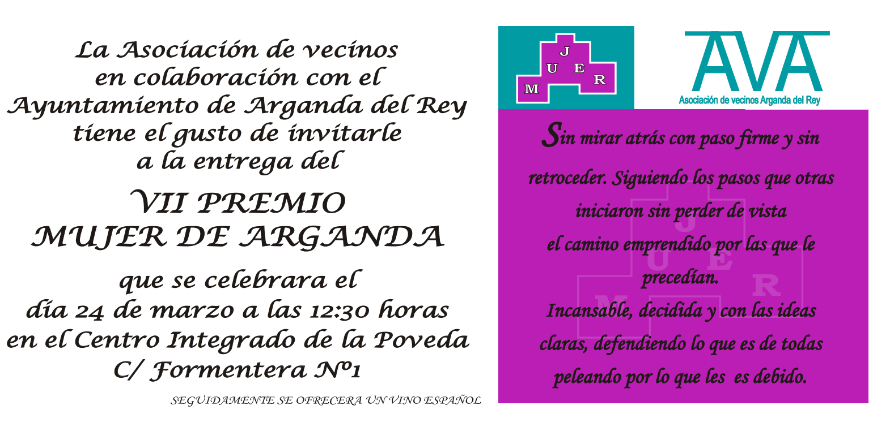

Os recordamos que este domingo a las 12 horas AVA participará en el mercadillo solidario que se llevará a cabo en el Paseo de la Misericordia dentro de los actos de la “Semana del Asociacionismo y el Voluntariado”.
Os invitamos a acudir, ya que ponemos a la venta juguetes, libros, velas, ropa… y muchos artículos más de primera mano o prácticamente nuevos a precios de crisis, donados por nuestros asociados, y la recaudación se donará para la adquisición de juguetes que se entregarán a los menores más desfavorecidos de nuestra localidad.
Podéis adquirir artículos de cara a navidad a muy buen precio además de colaborar con una excelente causa.
¡Contamos con vosotros!
Con motivo de la entrega del Premio Mujer de Arganda, en su edición de 2012 la Asociación de Vecinos de Arganda os invita a todos a atender a la ceremonia de entrega.
Os esperamos a todas y a todos este sábado 24 de marzo a las 12.30 horas en el Centro Integrado de la Poveda para asistir a la entrega del premio en su séptima edición que otorga la Asociación de Vecinos de Arganda en colaboración con el Ayuntamiento a Elvira Ortega García. Contamos con vosotros.
A la finalización del acto se servirá un aperitivo.
